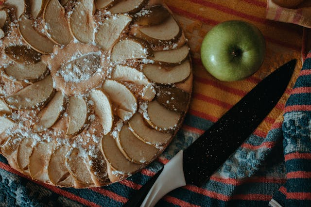

Tarte aux Pommes Normande (French Apple Tart)

What is it?
My mother used to cook this French apple tart for us all, usually to go with Sunday dinner. I was wanting to bake
something special for a special someone so I asked for the recipe. Tried it out today, and it's just as I remember. The thing that makes it for me is the frangipane.
Ingredients
Pastry
- 1 ⅓ cups all-purpose flour
- 1 pinch salt
- ½ cup butter, softened
- 1 egg yolk
- 3 tablespoons cold water, or as needed
Frangipane
- ½ cup butter, softened
- ½ cup white sugar
- 1 large egg, beaten
- 1 egg yolk
- 1 tablespoon calvados (apple brandy)
- ⅔ cup ground almonds
- 2 tablespoons all-purpose flour
- 4 medium sweet apples - peeled, cored, halved and thinly sliced
- 1 teaspoon white sugar for decoration
- ¼ cup apricot jelly
Directions
- To make the pastry: Stir 1 1/3 cups of flour and salt together in a medium bowl. Add butter, 1 egg yolk, and water; stir until mixture forms large crumbs. If it is too dry to press a handful together, stir in more water. Press dough into a ball and wrap in plastic wrap. Flatten slightly and refrigerate for at least 30 minutes, or until firm. This part can be done up to three days in advance.
- To make the frangipane: Cream butter and 1/2 cup of sugar together in a medium bowl with an electric mixer until light and soft. Gradually mix in an egg and remaining egg yolk one at a time. Stir in apple brandy. Stir 2 tablespoons of flour into ground almonds, then mix into batter. Set aside.
- Roll out pastry dough into a 12-inch circle on a lightly floured surface. Fold loosely into quarters, and center the point in a 10-inch tart or pie pan. Unfold dough, and press into the bottom and up the sides. Prick with a fork all over, and flute the edges. Return pastry to the refrigerator to chill until firm.
- Preheat the oven to 400 degrees F (200 degrees C). Place a baking sheet inside the oven while it preheats.
- Spoon frangipane into chilled pastry crust, and spread into an even layer. Arrange apple slices in an overlapping spiral pattern. Each slice should have one edge pressed into the frangipane until it touches the pastry base, and then overlap the previous slice. Start at the outside edge, and work towards the center.
- Place the pie plate on top of the baking sheet in the preheated oven. Bake until filling begins to brown, about 15 minutes. Reduce the oven temperature to 350 degrees F (175 degrees C). Bake for another 10 minutes, then sprinkle sugar over the top of the tart. Return to the oven until the sugar caramelizes slightly, about 10 minutes more.
- Cool the tart on a wire rack. A short time before serving, warm the apricot jelly; add some water if necessary to make it a liquid consistency. Brush over the tart for a nice shine.
Source
Navigation